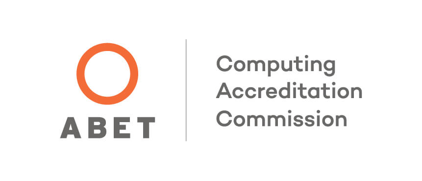

Program Accreditation & Assessment

Accredited
The Computer Science Department's Bachelor of Science program has been
fully accredited by the Computing Accreditation Commission of ABET since
1994. Being accredited requires routine monitoring and continuous improvement
of our program. This is accomplished through utilization of a comprehensive
assessment plan. Please find below our objectives and outcomes, various minutes
and reporting instruments, and our annual enrollment and graduation data.
Program Educational Objectives
(PEO)
*These are broad statements that describe the career and professional
accomplishments that our B.S. in Computer Science program prepares our students
to achieve.
Graduates of the program will be able to:
- Engage in the professional practice of computing with job titles such as Computer
Programmer, Software Engineer, Database Administrator, Network Administrator, Systems
Analyst, or Systems Programmer. Some will become managers.
- Pursue advanced degrees in computing or related disciplines. Some will work in the fields
of teaching and research.
- Engage in life-long learning in order to remain current in the computing profession in a
diverse and inclusive culture.
Student Outcomes
(SO)
*These are narrow statements that describe what students are expected to know and
be able to do by the time of graduation. These relate to the skills, knowledge, and behaviors
that students acquire in their matriculation through the program.
Graduates of the program will have an ability to:
- Analyze a complex computing problem and to apply principles of computing and other relevant
displines to identify solutions.
- Design, implement, and evaluate a computing-based solution to meet a given set of computing
requirements in the context of the program's discipline.
- Communicate effectively in a variety of professional contexts.
- Recognize professional responsibilities and make informed judgments in computing practice
based on legal and ethical principles.
- Function effectively as a member or leader of a team engaged in activities appropriate to
the program's discipline.
- Apply computer science theory and software development fundamentals to produce computing-based
solutions.